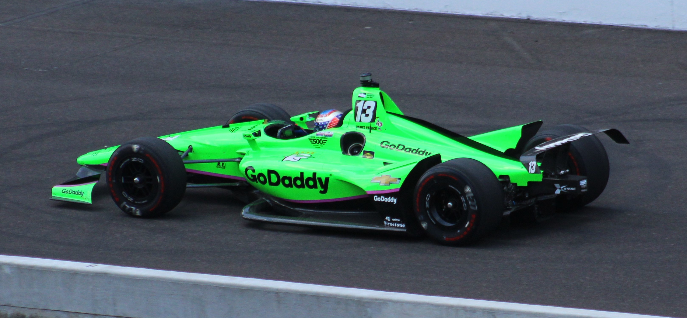

Despite mototsports being male dominated for all of its history there are plenty of women who have broken that trend and found a home in a variety of types of racing. From the 24 Hours of Le Mans in the 1920s to Climbing Pikes Peak in the 80s ti winning Indycar Races in the 2010s. Here is a breif timeline of milestones achived by the most famous women in racing.
1929 - Odette Siko often reffered to as "The first Lady of Le Mans" first competed in 1929 and eventually finished 4th overall at the 1932 event.
1949 - Sara Christian competed in the first ever NASCAR stricktly stock event. She raced that season against her husband Frank Christian making them the only couple to compete in NASCAR.
1958 - Maria Teresa de Filippis got the chance to attempt to qualify for the 1957 Mocaco GP. She unfortunatly didn't qualify in the top half and missed out on the race. However later in the year at the Belgian GP where there is no cut off she raced and completed all 24 laps at the massive and dangerous Spa Circuit.
1976 - Janet Guthrie was the first woman to attempt to qualify for the Indianapolis 500 but barely missed out. In 1977 she would qualify for both the Indy 500 and the Daytona 500, also becoming the first woman to lead a lap in the NASCAR Winston Cup Series.
1981 - Michele Mouton has an incredibly impressive resume. She would win her first rally race in 1978 in the Audi Quattro and continue to compete for wins and championships many years after. In 1985 she won the Pikes Peak Hill Climb in the Legendary Audi Quattro S1, smashing the record at the time held by Al Unser Jr.
1999 to 2010 - Sarah Fisher would compete in the Indycar Series and the Indy 500 becoming the first woman to earn a pole position in major Open Wheel Racing. She would also be the highest placing female with her career high 2nd place beforer Danica Patrick won in 2008
2000s - Kathrine Legge competed in Indycar, Nascar, Sports Car racing and Formula E. Her most notable acheivment being 4 wins in the GTD class in the IMSA Series.
2008 - Danica Patrick became the first woman to win a race in major open wheel racing! On April 20th, 2008 in the Japan 300 at Twin Ring Motegi Danica enheritted the lead when the cars infront had to pit for fuel. She would also win 3 pole positions and earn 7 total podiums in Indycar as well as being the first woman to ever lead the Indianapolis 500. She then made the move to NASCAR where she would earn a pole position and 7 top 10 finishes.
Present - Tatiana Calderon compted in the first half of the 2022 Indycar season before sponsorship issues cut her season short. She also competes in the World Endurance Champiosnhip alongside Sophia Floresch and Lilou Wadoux.
Present - Sophia Floresch currently competes for the all female Richard Mille Racing team in the Wolrd Endurance Chamipship and is very active in the world of motorsports, promoting young girls to try thier hand at racing!